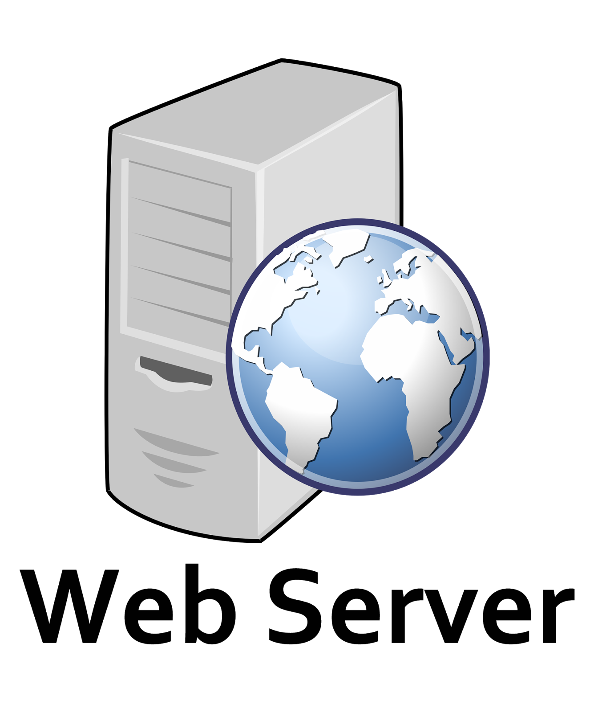

JENIS DAN FUNGSI SERVER DALAM JARINGAN KOMPUTER

Ahmad Nidzomunnashil Makmur
NIM: 607012400122
Kelas: 48-02
Matakuliah: Jaringan Komputer

Web Server
Server yang melayani permintaan halaman website dan aplikasi web.
- Apache: Open source, fleksibel, mendukung berbagai bahasa
- NGINX: Performa tinggi, efisien untuk traffic besar

Database Server
Server untuk mengelola dan menyimpan database.
- MySQL: Populer untuk aplikasi web
- PostgreSQL: Cocok untuk data kompleks enterprise

Email Server
Server untuk layanan email dan komunikasi.
- Exchange Server: Solusi email enterprise Microsoft
- Postfix: Open source dengan keamanan tinggi

File Server
Server untuk berbagi dan menyimpan file.
- Windows File Server: Kontrol akses detail
- Samba: Berbagi file lintas platform

DNS Server
Server untuk penerjemahan nama domain ke IP.
- BIND: Standar industry DNS
- Windows DNS: Terintegrasi dengan Active Directory

Application Server
Server untuk aplikasi berbasis Java.
- Tomcat: Ringan untuk web apps
- JBoss: Lengkap untuk enterprise apps

Proxy Server
Server untuk optimasi dan keamanan jaringan.
- Squid: Caching dan filtering konten
- HAProxy: Load balancing handal

FTP Server
Server untuk transfer file.
- vsftpd: Keamanan tinggi
- FileZilla Server: Interface ramah pengguna

Game Server
Server untuk game online.
- Minecraft Server: Hosting game Minecraft
- Steam Server: Berbagai game populer

Media Server
Server untuk streaming media.
- Plex: Solusi streaming premium
- Jellyfin: Alternatif open source
Setiap server dapat dikonfigurasi sesuai kebutuhan spesifik organisasi dan dapat diimplementasikan baik secara fisik maupun virtual. Pemilihan jenis server tergantung pada skala organisasi, kebutuhan performa, anggaran, dan kemampuan tim IT yang tersedia.
Sumber dan Materi Pendukung
-
Lampiran file tutorial HostingDownload PDFFormat: PDF • Ukuran: 2.5 MB
-
Sumber ArtikelPergi Ke halaman